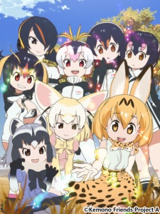
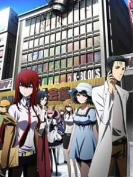
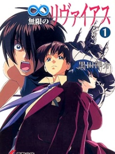
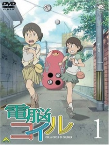
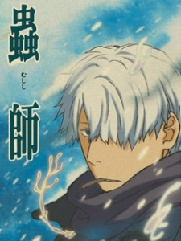

 1,兽娘动物园
2017年1月开播 已完结, 全12话
简介
有各种动物充满谜团的“加帕利动物园”，游戏内包含有众多少女化的动物，
并且能和她们做朋友，而本次动画化将采用全3D动画制作，在还原游戏的世界观的
同时，也会带来全新的故事......
|
 2,命运石之门
2011年4月开播 已完结, 全25话
简介
本作的故事发生在「Chaos;head」中的“涩谷崩坏”一年半后的世界，而舞台则从涩谷转移到了
秋叶原。主角冈部伦太郎是一位深度中二病的大学生，时常幻想自己身肩重任，并自称“狂气的疯狂科
学家·凤凰院凶真”。说到底，他的所作所为不过就是在“未来道具研究所”中与两个伙伴开发各种奇
奇怪怪又不切实际的东西。然而，这样的他们却在偶然......
|
 3,无限的未知
1999年10月开播 已完结, 全26话
简介
2137年、大规模的太阳耀斑出现，高密度的等离子云覆盖太阳系的黄道面的南半面、地球南半球被破坏
、17亿人死亡。 2225年、地球的卫星轨道上的太空人养成学校，遭受不明攻击，失去控制后，坠落中……
在坠毁前，隐藏在内部的外洋型航宙可潜舰“黑Ryvius”起动。 教官全员殉职、避难中的少年少女487人……
|
 4,电脑线圈
2007年5月开播 已完结, 全26话
简介
202X年的近未来，古老的都市——大黑市。那里的孩子之间非常流行“电脑眼镜”。“电脑眼镜”
指的是在大街上随处可以连接网络，显示各种资料的东西，是孩子们的必备之物，孩子们几乎人手一台。
小学六年级的小此木优子因父亲工作调动的原因，搬到了大黑市。她在那里遇到了另一个与她同名的转学生，
天泽勇子。相同的名字，相同的年纪......
|
 5,虫师
2005年10月开播 已完结, 全26话
简介
这里的虫既不是动植物，也与微生物和菌类不同，是更接近生命原生态的东西。这些东西总称为“虫”。
它们的形态和存在都很暧昧，当人与虫的世界重叠之时，发生了超越人类智慧的怪异现象，此时人类才
开始知道它们的存在。 所谓生命，并非为威胁异己而存在。只是，各自以各自的形态存在着——作为
连接这样的”虫“与人类的”虫师“--主人公银......
|